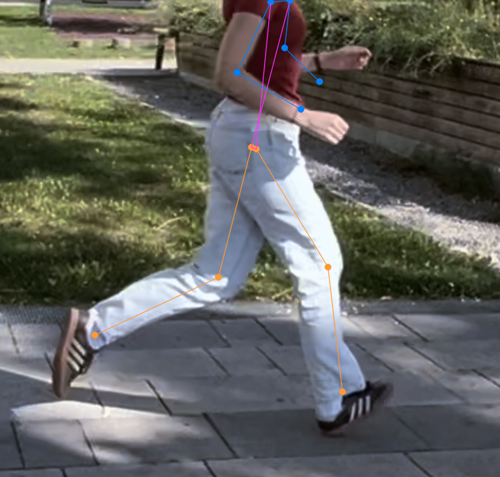
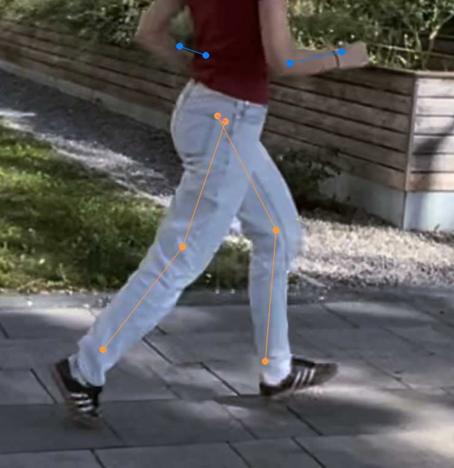
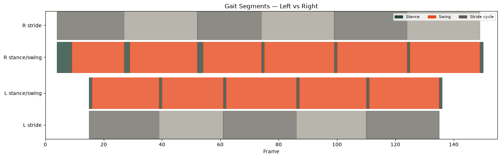

The Research Problem
Incorrect running form can cause joint pain, overuse injuries, and other musculoskeletal problems.
So — how do we detect bad running form?

Mispostures We Focused On
Six running-form issues drive every downstream signal, logic rule, and output in this project.
Overstriding
Knee Flexion at Foot-Strike
Vertical Oscillation
Trunk Lean
Cadence
Heel Whip / Kick-Back Height
The Data
- Tested the pipeline on a range of running clips sourced from YouTube to check robustness across conditions
- Recorded our own footage as the basis for the final prototype and live demo
- Opted for a side view — the standard angle for analyzing stride mechanics
Perception
We compared two pose-estimation models before choosing one for the pipeline.
| YOLO26n-pose | MediaPipe | |
|---|---|---|
| Keypoints | 17 body joints | 33 landmarks |
| Hip / Knee / Ankle / Shoulder | ✓ covered | ✓ covered |
| Foot detail (toe, heel) | not included | included |
| Setup & maintenance | Installs cleanly via uv add | Incompatible with the latest Python version; needs a manually downloaded .task file |
| Fit for our mispostures | Sufficient | More than needed |
Decision: YOLO26n-pose covers every joint our misposture signals need — only 10–20% of running-posture issues rely on MediaPipe's extra landmarks, so the added complexity wasn't worth it.
Signal — Keypoints
Four joints drive the misposture signals in this project:
- Shoulder
- Hip
- Knee
- Ankle
PREPROCESSING
Keypoints retrieved per frame at conf_threshold = 0.5. Missing points are interpolated and coordinates smoothed before signal calculation.
Contact & Toe-Off


CHALLENGE
Detecting contact & toe-off reliably took many iterations. Video quality had a direct impact, and cleanly separating contact from toe-off in ambiguous frames remained the hardest part of the signal layer.
Phases

Leg Length Normalization
Leg length = hip → knee → ankle segment length.
- Different runners have different body sizes
- Without a treadmill, distance to the camera can drift over the clip
signal_px / leg_length_px
Logic & Output
Each misposture uses its own calculation on top of the normalized signals, and its own threshold. Six mispostures were analyzed — walk through them on the following slides
Reflection
TREADMILL WOULD HAVE HELPED
A fixed camera distance would've killed the leg-length drift and cleaned up every signal downstream.
SIDE-VIEW LIMITATION
Only catches sagittal-plane issues — something like knee valgus needs a frontal angle.
CONTACT / TOE-OFF DETECTION
Hardest signal to get right — video quality mattered a lot, and some frames were just ambiguous.
THRESHOLD DEFINITION
We're not biomechanics experts, and there's no official reference for most thresholds — we had to estimate.